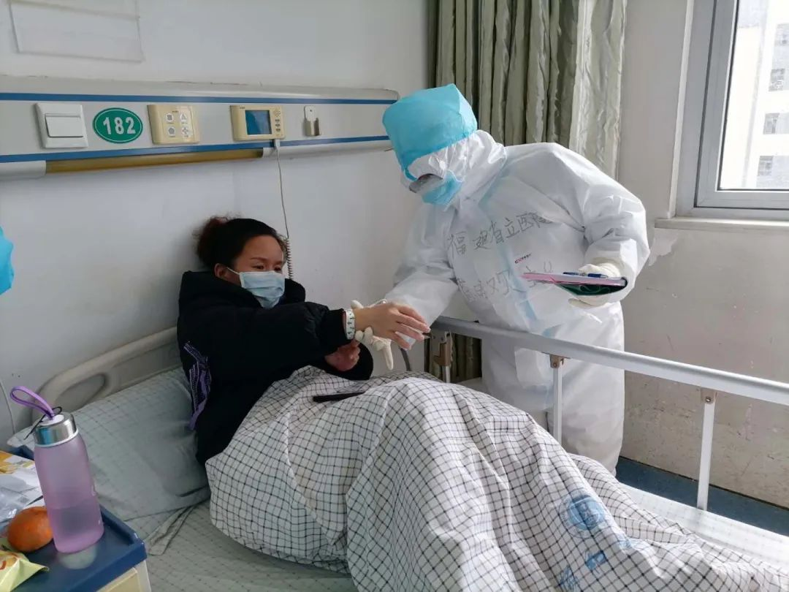
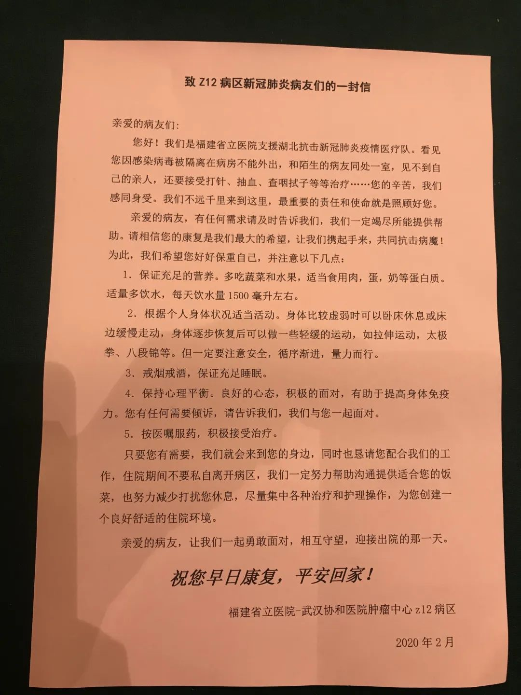

95后一线护士：盛放在武汉病房的葵花
原文链接 备份链接 她会因为想家哭鼻子，也会因为喝到可乐而幸福感爆棚。她自愿报名到武汉一线为患者服务，我又钦佩她的坚强和勇敢。 文 | 吴美芬 小葵是从北京到武汉支援的一名护士，今年24岁。2月7日她到达武汉，至今已经有20天。2月19 …
澎湃新闻记者 王选辉 实习生 刘宇丹
“我住院了，那我家猫怎么办？”
“每天让我吃这个药，到底有没用？”
福建援鄂护理人画漫画鼓励患者。 来源：受访者提供 视频编辑：吴佳颖(01:06)
到湖北武汉后，陈晓欢才真实地感受到患者的焦虑，她也开始思考：面对焦虑，护理人员还能做点什么呢？

在重症病房内，护士照顾患者的生活起居、用药等护理工作。本文图片 受访者供图
陈晓欢是福建省立医院护理部主任，2月13日随福建援鄂医疗队来到武汉，目前在华中科技大学同济医学院附属协和医院肿瘤中心，负责Z12病区新冠肺炎重症病房的护理管理工作。
可能一些人会认为，病人的康复，最主要的是靠治疗。然而在陈晓欢看来，患者保持一个良好的精神状态，和治疗同样关键。
“一个人在情绪低落的时候，免疫力是下降的，低落的情绪会影响患者的休息、睡眠、饮食。如果患者觉得心情舒畅，免疫力自然就提高了。” 陈晓欢接受澎湃新闻（www.thepaper.cn）采访时说，可以肯定的是，好的情绪能够帮助病人早日的康复。
除了负责患者的生活起居，日常活动、用药等护理工作外，陈晓欢带领护理团队还成立心理疏导专科小组，通过话疗、支持性心理疗法等措施对焦虑患者进行心理疏导，打开病人的心扉，倾听他们的诉说，缓解其担忧、焦虑、紧张等不良情绪。

在重症病房内，护士照顾患者的生活起居、用药等护理工作。本文图片 受访者供图
小焦虑和大关心
在Z12病区住院的，收治的都是新冠肺炎的重症患者，60岁以上患者占比超过60%。
每个患者入院时，护士都使用《住院患者抑郁和焦虑筛查自评量表》对患者进行心理评估。有的人看似正常，评估后才能发现异常，评估结果大于6分以上的护士就对患者采取心理干预。”陈晓欢说。
同时她们也发现，一些患者在评估时是正常，但情绪有时也容易出现起伏和波动，也需要护士给予关心和关注。
心理上的焦虑和不安主要体现在语言上的过激。“很急躁，你跟他说什么他都不爱理你，或者就不理你。有时也不配合治疗。”陈晓欢说，之前有个病人，他总怀疑每天吃的药是否有用？是不是有问题？是不是毒药？一直处于焦虑、不信任、不配合的状态。
针对一些焦虑的患者，陈晓欢带着护士们采用话疗的方式，跟病人进行有技巧的交谈，分散患者对疾病的注意力，让病人把他的想法说出来。她发现，其实很多影响病人情绪的是一些小焦虑，在外人看来，可能都是小事情。

福建省立医院护理7组的护士们利用休息时间，给患者们画了各种的”加油小插画”。
比如有一位患者，家里养了一只小狗，患者先去了方舱医院，然后又被转运到Z12病区治疗。他的小狗在家大概有几天没人照顾了，他非常焦虑，心里总想：我的小狗怎么办？患者多次打电话跟社区联系，社区工作人员任务重，一时也顾不过来。这时，他就比较躁动，和护士交流时，也会说一些比较过激的语言。
这一切，负责的护士看在眼里，急在心里。由于在医院隔离区不能用手机，等到下班以后出来，她们就用手机帮忙联系社区，当天晚上打了好几次电话，那边也没有人接。
第二天，在护士锲而不舍的坚持下，终于联系上了社区，恳请社区工作人员到患者家中，拍一段小狗安好的视频，传给患者，“他感到非常开心，一直向护士表达感谢。”
还有一位糖尿病患者，他日常注射胰岛素用的是直径6毫米的针头，然而在病房里只有8毫米的，就很不开心：“怎么回事，为什么给我用8毫米针头，你们不知道吗？很痛啊。”
“病人很生气的时候，一定不能去火上浇油。”陈晓欢说，遇到这种情况，首先要倾听患者的讲述，然后再解释。最后，陈晓欢下班后前往医院外面的药店，终于买到了6毫米的针头。拿进去后患者就觉得很开心，觉得事情得到了解决。“虽然是简单的举措，但是关注的是细节，细微之处的关心能让病人感受到我们的爱和关心。”陈晓欢说。

陈晓欢护理团队撰写一封致新冠肺炎患者的信，信中告诉患者，“我们不远千里来到这里，最重要的责任和使命就是照顾好您。”
用信和漫画激励住院者
住在隔离病房里，患者与家人隔绝，与外面社会隔绝，很多人不知道患有这样的疾病，即将面临着什么？网络上杂乱信息和负面情绪也容易引发患者的不安。
为此，陈晓欢护理团队撰写一封致新冠肺炎患者的信，信中告诉患者，“我们理解你们的感受，我们千里迢迢来到武汉的目的就是照顾好你们。”这封信给了很多的患者信心与勇气。
她记得，之前有一家三口同时入院，开始对护士态度很一般，不愿意多说话。之后，医生主动和他们的孩子聊，不聊疾病，就聊上学的事儿。父母看见孩子聊的很开心，就主动凑过来了。慢慢地，一家三口对医生、护士都产生好感，话匣子也打开了，现在正在逐步恢复健康状态。
有个患者因为饭送的时间稍晚了点，一开始很生气，护士则一直陪在一旁听她述说，最后，这个患者也觉得不好意思了，“其实，我说出来也就舒服了”。离开时，护士还向她保证，晚饭的时候，一定照顾到她的需求。
还有一位患者是医生，不幸染病住进了Z12病区，目前已出院。出院前，他对护士表示感激：“你们的医生护士关心每一个患者，经常陪着说话，第一天住院的时候，我把我的情况说出来以后，明显感觉身体舒服很多。”
在陈晓欢带领的医护团队第七组，护理人员为了鼓励患者，增加信心，连夜手绘漫画，以“大白”的形象画了很多病房生活与工作中的场景，比如推车分发午餐，穿着隔离服的样子。漫画旁边还特意写了很多鼓励的话语，比如“您是最棒的”“吃饱了，才有力气战胜病毒”等。陈晓欢说，当护士将漫画分发到患者的手中时，看见的都是开心的笑脸，听见的都是一句句感谢的话语。
在Z12病区，陈晓欢带领的护理团队已经收到十余份出院患者写的感谢信，她和护士们还建立了“暖心祝福墙”，张贴祝福语和感谢信，希望借此来鼓励还在住院的患者：“让我们一起勇敢面对，互相守望，迎接出院的那一天。”
本期编辑 常琛
推荐阅读


原文链接 备份链接 她会因为想家哭鼻子，也会因为喝到可乐而幸福感爆棚。她自愿报名到武汉一线为患者服务，我又钦佩她的坚强和勇敢。 文 | 吴美芬 小葵是从北京到武汉支援的一名护士，今年24岁。2月7日她到达武汉，至今已经有20天。2月19 …
原文链接 备份链接 龙华医院、市中医医院接管的C5病区46位患者，经中医治疗后，大多数患者第一次新型冠状病毒核酸检测结果已呈阴性，其中，最严重两例危重病患者采用“截断扭转”防治策略，一例患者趋于痊愈，另一例病情较前明显好转。 记者 | …
原文链接 备份链接 每天一条独家原创视频 大年初一，首批驰援湖北的医疗队之一 湖南株洲市中心医院的15人医疗队抵达黄冈。 发现状况令人崩溃： 黄冈当地医护人员天天连轴转， 已经支撑不下去， 防控不到位，医护人员陆续被感染， 床位紧张，住 …
原文链接 备份链接 蔡利萍脖子上有一道深深的疤痕，清晰可见，那是 2019 年 11 月她做颈椎手术留下的，此后，她在家休养。 当疫情袭来时，她还有一个月假期没休完，可她坐不住了。 「孩子们可能忙不过来，我就提前回来了。」蔡利萍曾对媒体这 …
原文链接 备份链接 ********** *****现在如果能多一点N95口罩、给我们医院捐赠一些无创呼吸机，就更加好了。***** 身穿防护服的蔡毅。受访者供图 文 | 新京报记者 周小琪 编辑｜陈晓舒 校对 | 杨许丽 ►本文 …